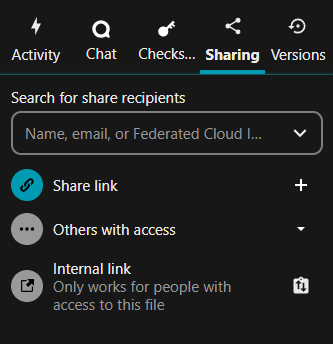
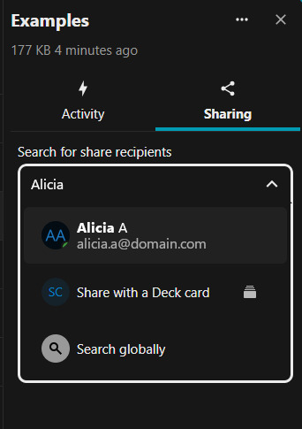
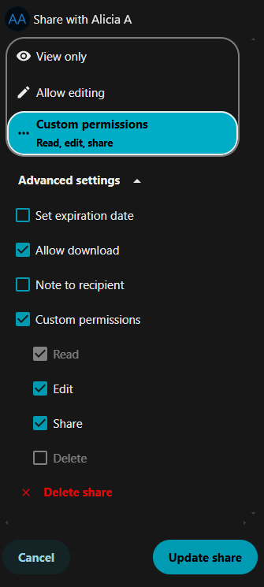
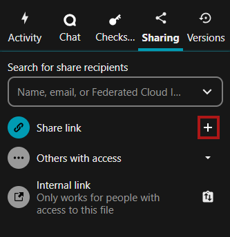
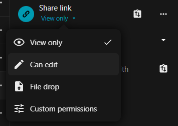

Sharing your data
In ICOS Fileshare there are different folder icons. Your personal folders are solid blue, while folders that are part of a Group structure have a group icon on the folder and shared folders have a sharing icon on them.
Note
When sharing folders and files from within Group structures, only share folders or files therein publicly when it is safe, necessary, and useful.
Sharing a single file or folder with other users or a group within Fileshare
Right click on the file or folder and select Open details from the drop-down menu. Then, click on the Sharing tab, if it is not already selected. (Alternatively, you can click on the share icon on the right of the file or folder in the list.)
The sharing options sections will display various options, as shown below.

To share a file within ICOS Fileshare, start typing a name in the search box until you see the correct person or group (that you are a member of). Then, click on the name to select that person or group. You can also identify a person by using a federated cloud ID, for example on the ACTRIS Nextcloud or some other Nextcloud or Owncloud server. An example of the search box is shown below.

Note
You can usually ignore the "Share with a Deck Card" option. This is a Nextcloud feature used for creating Decks, which function as "bulletin board" style organization schemes within Nextcloud.
After clicking on the person or group, you will be able to set permissions for
the user, such as View only, Allow editing, or you can customize the
permissions using Custom permissions.
If you have View only access to a file, then you will only be able to share
it as View only.
This user will get an email that the file/folder has been shared with them and they will see the shared file/folder in their directory within the Fileshare. The Sharing options are shown in the sidebar, where you can see all people or groups who have access to the file/folder.
To modify the sharing options, click on the ... icon next to the person or group name. Here, you will see the permissions set for the shared file and can remove access to the file/folder by selecting the Delete share option at the bottom of the sidebar. You can also set an expiration date for the sharing access and change the ability of the person or group to further share the file/folder with others.

Sharing with anyone using a link
You can share files or folders with people who do not have an account at ICOS Fileshare by sharing the file with a link. In the Sharing options tab, below the search box, you will find the Share link section. Click the plus sign (+) icon to the right of the Share link text.

Clicking the clipboard with up and down arrows icon will allow you to copy the link to your clipboard, which allows you to paste that link into an email or message to share the file/folder.
After enabling sharing with a link, you can alter the permissions by clicking on the View only link below the Share link text.
Warning
If you enable editing, this will allow anyone with the link to edit the file or folder. You can always revert the file if necessary to an older version, but please take caution when sharing a link with editing permission. If possible, set an expiration date or password using Custom permissions by following the instructions below.
If you set the permissions to Custom permissions you will have further security options, including Set password and Set expiration date. These settings are recommended if you are enabling editing, as the link could possibly be accessed by people other than the desired recipient.
When sharing a folder, you will also have the option to enable File drop, which lets people who have the link upload files without seeing the contents of the folder. You will also be able to set the Create permission under Custom permissions, which controls whether or not people with the link will be able to create (or upload) new files.
